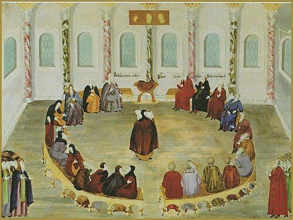

Земский собор 1613 года
По взятии Москвы, грамотой от 15 ноября соправители русского государства Пожарский и Трубецкой созвали представителей от городов, по 7 человек, для выбора царя. Сигизмунд вздумал было идти на Москву, но у него не хватило сил взять Волоколамск, и он ушёл обратно. В январе 1613 г. съехались выборные от всех сословий, включая крестьян. Собор (то есть всесословное собрание) был один из самых многолюдных и наиболее полных: на нём были представители даже чёрных волостей, чего не бывало прежде. По мнению историка Ключевского, Земский собор 1613 года был первым всесословным собором. Когда выборные прибыли в столицу, был назначен трёхдневный пост, которым представители сословий всей страны хотели очиститься от грехов перед выборами нового государя. По окончании поста начались совещания. Вопрос о выборе государя из числа иностранных правителей, таких как польский принц Владислав и шведский Карл Филипп, был решён отрицательно; была отметена и кандидатура Ивана Дмитриевича, «воренка», малолетнего сына Лжедмитрия II и Марины Мнишек. Однако и ни один из русских кандидатов сразу не встретил единогласной поддержки. «Повесть о Земском соборе 1613 года» сообщает о восьми претендентах из числа бояр, в том числе Дмитрии Тимофеевиче Трубецком, Иване Михайловиче Воротынском и Дмитрии Михайловиче Пожарском. Выборы были очень бурные. Сохранилось предание, что патриарх Филарет требовал ограничительных условий для нового царя и указывал на своего сына как на самого подходящего кандидата. Выбран был действительно Михаил Фёдорович, и ему были предложены те ограничительные условия, о которых писал Филарет: «Предоставить полный ход правосудию по старым законам страны; никого не судить и не осуждать высочайшей властью; без собора не вводить никаких новых законов, не отягчать подданных новыми налогами и не принимать самомалейших решений в ратных и земских делах». Избрание состоялось 7 (17) февраля 1613, но официальное объявление было отложено до 21-го, чтобы за это время выведать, как примет народ нового царя. С избранием царя кончилась смута, так как теперь была власть, которую признавали все и на которую можно было бы опереться.
